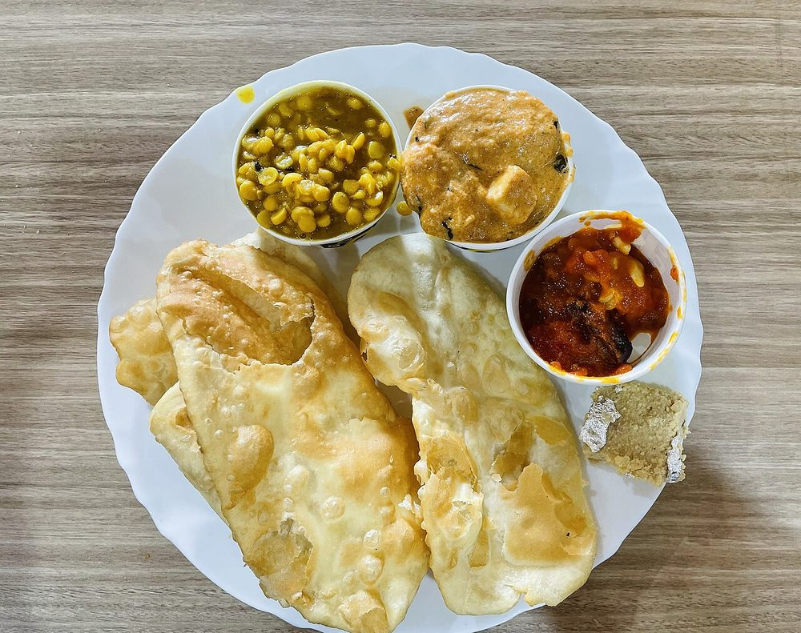

Start the day before. The soaking alone is 8 hr, against 105 min of actual work.
Contains: milk
Ingredients
Quantities for 4.
- 200g, soaked overnight Whole Urad
- 50g, soaked overnight Chana Dalthe traditional partner in a village mah di dal
- 5cm, half crushed, half in matchsticks Ginger
- 10 cloves, crushed Garlic
- 3, slit Green Chilli
- 1 medium, finely chopped Onionoptional
- 4 tbsp Ghee
- 1 tsp Cumin Seeds
- 1/4 tsp Asafoetidause compounded-free hing to keep this gluten-freeoptional
- 1/2 tsp Turmeric
- 1 tsp Chilli Powder
- 1 tsp Coriander Powderoptional
- 1/2 tsp Garam Masalaoptional
- 3 tbsp, chopped Coriander Leavesoptional
- to taste Salt
- 1.2 litres Water
Cookware
pressure cooker, stovetop
Checked against the ingredient list for ten allergens: milk, egg, fish, crustaceans, tree nuts, peanuts, sesame, mustard, soy and gluten. Brands vary, so read the label on anything new to you.
Before you start
- Soak the whole urad and chana dal together overnight, at least 8 hours. This dal cannot be rushed with hot water.
- This is the plain village dal, not dal makhani: no tomato, no cream, no butter finish. The creaminess comes only from the urad breaking down.
- Keep 200ml of boiling water beside the pot for the long simmer.
Method
- Drain the soaked dals and pressure cook with 1.2 litres water, the turmeric, half the crushed ginger, half the garlic and 1 tsp salt for 6 whistles, then 25 minutes on low.
- Let the pressure drop naturally and open. The grains should be soft enough to crush against the side of the pot with a spoon.If they still resist, cook another 10 minutes under pressure. Everything after this depends on the dal being fully soft.
- Mash about a third of the dal against the pot with the back of a ladle to thicken the liquid.
- Simmer uncovered on the lowest heat for 35-40 minutes, stirring every 5 minutes and topping up with hot water when it gets too thick.This slow open simmer is the whole recipe. Skipping it leaves you with boiled beans in water.
- In a small pan heat the ghee, add the cumin and asafoetida and let them foam for 15 seconds.
- Add the onion and fry 8 minutes to a deep gold.
- Add the remaining crushed garlic and the slit green chillies and fry 1 minute more.
- Off the heat, stir in the chilli powder and coriander powder so they bloom in the residual heat without burning.
- Pour the tadka into the dal, stir once, and simmer together 10 minutes.
- Check the salt, add the garam masala and finish with the ginger matchsticks and coriander leaves. Serve with makki di roti or plain rice.
Storage
Keeps 4 days refrigerated and is famously better the next day. It thickens hard when cold; reheat with 100ml hot water per portion, stirring until smooth. Freezes 2 months.
Nutrition Good estimate
Medium protein: 15 g a serving, 16% of the calories
| Per serving392 g | Per 100 g | |
|---|---|---|
| Calories | 366 kcal | 94 kcal |
| Protein | 14.9 g | 4 g |
| Carbohydrate | 46.5 g | 12 g |
| of which sugars | 4.0 g | 1 g |
| Fibre | 11.0 g | 3 g |
| Fat | 14.8 g | 4 g |
| of which saturated | 8.3 g | 2 g |
| of which unsaturated | 5.4 g | 1 g |
Ingredients given to taste count as zero, so the real figures run a little higher. Nearest database match used for asafoetida, garam masala, whole urad. Estimated from raw ingredients using USDA FoodData Central.
More like this: Vegetarian Indian recipes · Gluten-free Indian recipes · Punjabi recipes
Times, yields, allergens and nutrition are guidance. Use your own judgement on doneness and on storing. More in About.